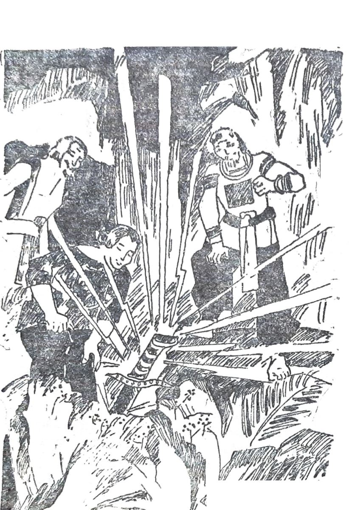

Từ ngày xửa ngày xưa, có một lưỡi gươm thần hiện ra ở Tây Nguyên. Cứ những đêm không trăng, lưỡi gươm tỏa sáng. Lúc ấy mọi người mới biết chỗ gươm hiện. Thanh gươm ấy có phép nhiệm mầu, nó có thể giết được người từ xa mà mỗi nhát chém hàng trăm hàng ngàn giặc. Cây gươm ấy lúc hiện ở vùng đất của bộ tộc E- Đê, lúc ở vùng Gia Rai, lúc ở vùng Ba Na …
Một hôm già làng Ba Na sai người xuống ấp Tây Sơn báo cho anh em Nguyễn Nhạc hay tin gươm thần xuất hiện trong vùng Ba Na, mé thượng nguồn sông Côn. Họ nói ánh gươm tỏa rực rỡ cả một vùng rừng núi.
-Ô, gươm thần hiện ra là có người anh hùng ra đời cứu dân. Mấy con ở Tây Sơn đang kéo cờ đánh chúa Nguyễn phải đến rút thử gươm thần. Các con rút được là các con có tài có đức, các con sẽ làm nên.
Đúng thế, người ta vẫn thường kể rằng mỗi lần gươm hiện là có nhiều tráng sĩ tìm đến gươm. Lưỡi gươm cắm sâu trong đá giữa rừng thẳm. Trải bao năm tháng mưa nắng mà lưỡi gươm không mòn, không gỉ. Nó không sáng trắng như bạc, nó đen bóng mà vẫn tỏa hào quang. Bao nhiêu người rút thử mà vẫn không được.
Anh Hai Trầu nhận lời già làng Ba Na; Hai Trầu là tên tục của người anh lớn Nguyễn Nhạc. Trầu là tên cái bến anh làm ăn.
Hai Trầu lên đến buôn. Đây là một khoảng cao nguyên năm từ Chư Ê Đê đến Kau Nak. Đất đó phì nhiêu.

.Anh Hai Trầu nom thật đẹp, thật oai. Dáng hùng dũng, tiếng sang sảng, người có nghĩa có nhân. Già làng thương lắm, quý lắm, muốn gả con gái yêu cho.
Hai Trầu ngỏ ý muốn rút thử gươm thần. Già làng nói:
-Hễ con rút ra được thì con sẽ có lưỡi gươm đánh đâu thắng đấy.
Họ phải chờ tám hôm mới hết trăng. Đêm ấy, họ đứng ở đầu buôn nhìn rừng núi. Gần nửa đêm, ở một phía rừng xa chợt thấy một quầng sáng tỏa ra. Già làng nghiêm trang nói:
-Gươm thiêng ở đó!
Già làng đem trai khỏe đi phát đường dẫn anh Hai Trầu tìm đến gươm. Đường đi hiểm trở, qua thác vượt ghềnh, đến gần sáng vẫn chẳng tới nơi. Ánh sáng của gươm lại tắt. Đoàn người đành nghỉ chân giữa rừng. Họ đốt lửa để đuổi thú rừng và cũng để đuổi muỗi. Họ trèo lên cây cao, chặt cành bắc sàn làm chỗ ngủ. Họ ăn lương khô cho đỡ đói. Một ngày qua đi, đêm lại xuống. Gần nửa đêm, quầng sáng của gươm thần lại bốc lên. Đoàn người chỉ chờ có vậy, họ lên đường tức thì. Nhưng họ cũng phải đi tới ba đêm mới tới nơi gươm hiện ra. Mặc dù cắm ngập trong đá. Gươm vẫn tỏa một thứ ánh sáng kỳ dị. Nó không chói chang nhưng vẫn lấp lánh, nó sắc sảo mà vẫn hiền hòa. Hai Trầu bước lại gần tảng đá, trang nghiêm đưa cả hai tay nắm lấy chuôi gươm… Lưỡi gươm theo ý Hai Trầu tuột tuột êm ru ra khỏi tảng đá như rút khỏi vỏ vậy.
Buôn Ba Na rung chiêng trống đón người anh Hùng nhận được gươm thần và báo tin cho cả một vùng rộng lớn. Người ta đem heo, đem rượu đến mừng gươm thần xuất hiện giúp đời, mừng người xứng đáng nhận gươm.
Già làng gả cô con gái quý cho Hai Trầu. Anh dẫn cưới một đàn trâu. Trâu này dùng để vỡ hoang vùng đất rộng từ Chê Ê Đê đến Kan Nak. Đó là căn cứ khởi nghĩa đầu tiên của nghĩa quân Tây Sơn.
Cho đến bây giờ, có ai qua thượng nguồn sông Côn vẫn còn được nghe đồng bào Ba Na bồi hồi kể lại chuyện cũ về một cuộc tìm gươm, về Cánh đồng cô Hầu và Đàn trâu ông Nhạc.